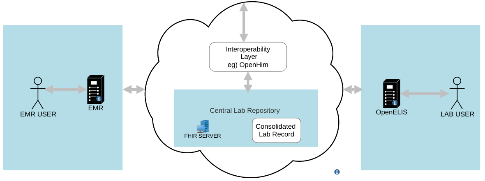

OpenELIS Global FHIR Implementation Guide
0.2.0 - ci-build

OpenELIS Global FHIR Implementation Guide
0.2.0 - ci-build

OpenELIS Global FHIR Implementation Guide - Local Development build (v0.2.0) built by the FHIR (HL7® FHIR® Standard) Build Tools. See the Directory of published versions
| Official URL: https://digi-uw.github.io/openelis-global2-fhir-ig/ImplementationGuide/org.openelisglobal.fhir | Version: 0.2.0 | ||||
| Draft as of 2026-09-29 | Computable Name: OpenELISGlobalImplementationGuide | ||||
This Implementation Guide (IG) describes the HL7® FHIR® R4 interfaces of OpenELIS Global, the open-source laboratory information system maintained by the Digital Initiatives Group (DIGI) at the University of Washington and the OpenELIS Global community.
It is written for teams connecting another system to OpenELIS: EMRs such as OpenMRS, national shared health records and lab data repositories, facility and client registries, other OpenELIS laboratories, and analyzer middleware.
What the profiles describe. Every profile, extension and identifier system in this guide describes
what OpenELIS Global 3.x reads and writes today. They were checked against the
OpenELIS-Global-2 develop branch at commit
889166b (29 September 2026). Where OpenELIS does something that is not ideal FHIR, the guide
documents the current behaviour and lists the gap on the Known Issues page. It does
not describe the behaviour we would like instead.
This guide covers the FHIR contract only. Installation, configuration and user documentation live in the OpenELIS Global documentation space on Confluence:
OpenELIS has three FHIR surfaces. Most integration problems come from mixing them up.
| Surface | What it is | Used for |
|---|---|---|
| OpenELIS FHIR REST API | A FHIR R4 server inside OpenELIS, at https://{host}/api/OpenELIS-Global/fhir. It reads and writes the OpenELIS database directly. |
Querying and managing patients, orders, specimens, results, organizations, practitioners, storage locations and analyzers. See OpenELIS FHIR REST API. |
| Co-resident FHIR store | A HAPI FHIR JPA server deployed next to every OpenELIS instance (org.openelisglobal.fhirstore.uri). OpenELIS writes transaction bundles to it after order entry, result entry and validation. |
The copy of OpenELIS data that other systems subscribe to, and the store other OpenELIS instances poll for referrals and shipments. |
| Remote FHIR servers | Servers OpenELIS polls (org.openelisglobal.remote.source.uri) and pushes to (org.openelisglobal.fhir.subscriber). |
Receiving lab orders from EMRs, lab-to-lab referral, specimen shipment, and pushing data to a shared health record or lab data repository. See Exchange Workflows. |

Typical deployment: an EMR and OpenELIS exchange orders and results through a shared FHIR server, optionally behind an interoperability layer such as OpenHIM.
| Area | Profile | Base | Produced or consumed by OpenELIS |
|---|---|---|---|
| People and places | OpenELIS Patient | Patient | Produced |
| OpenELIS Practitioner | Practitioner | Produced | |
| OpenELIS Organization | Organization | Produced and consumed | |
| Incoming orders | Lab Order Request Task | Task | Consumed (from EMRs) |
| Lab Order Request ServiceRequest | ServiceRequest | Consumed (from EMRs) | |
| Orders | OpenELIS Order Task | Task | Produced |
| OpenELIS ServiceRequest | ServiceRequest | Produced | |
| OpenELIS Specimen | Specimen | Produced | |
| OpenELIS Referral Task | Task | Produced and consumed (lab to lab) | |
| Results | OpenELIS Observation | Observation | Produced |
| OpenELIS DiagnosticReport | DiagnosticReport | Produced | |
| Instruments | OpenELIS Analyzer Device | Device | Produced and consumed |
| Storage | OpenELIS Storage Location | Location | Produced and consumed |
| Shipment | OpenELIS Shipment Box | SupplyDelivery | Produced and consumed (lab to lab) |
The CapabilityStatement describes the REST API. The Identifiers, Code Systems and URLs page lists every identifier system, local code system and extension URL OpenELIS uses. The Artifacts page lists everything, including the worked examples.
{base}/{suffix}, where {base} is the org.openelisglobal.oe.fhir.system property. It defaults to
http://openelis-global.org. The profiles in this guide assume the default. A site that changes the property
sends different system URLs, and those will not match the slices in these profiles.subject / for.Mappings tab), naming the
table or class each element comes from.The source is at DIGI-UW/openelis-global2-fhir-ig,
written in FHIR Shorthand. Pull requests are built by the HL7 IG Publisher in CI, and merges to main
publish to this site. When OpenELIS changes what it sends, update the matching profile in the same release.
Report problems as GitHub issues or in the OpenELIS Global community channels.
This guide and its examples may use terminologies such as LOINC® and SNOMED CT®, which have their own licence terms. Implementers are responsible for complying with them.
This is a draft (0.2.0, continuous integration build). It documents the behaviour of the current development branch and may change with each OpenELIS release.